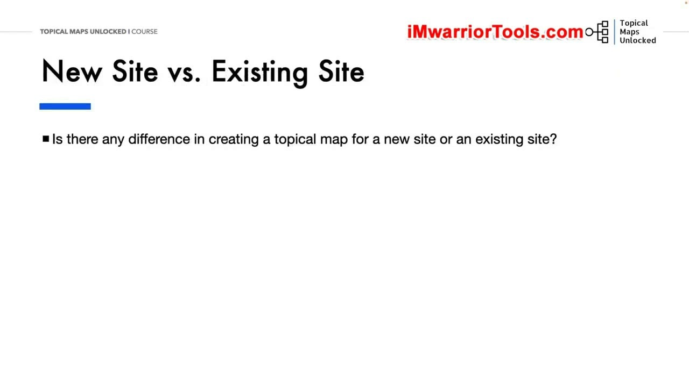
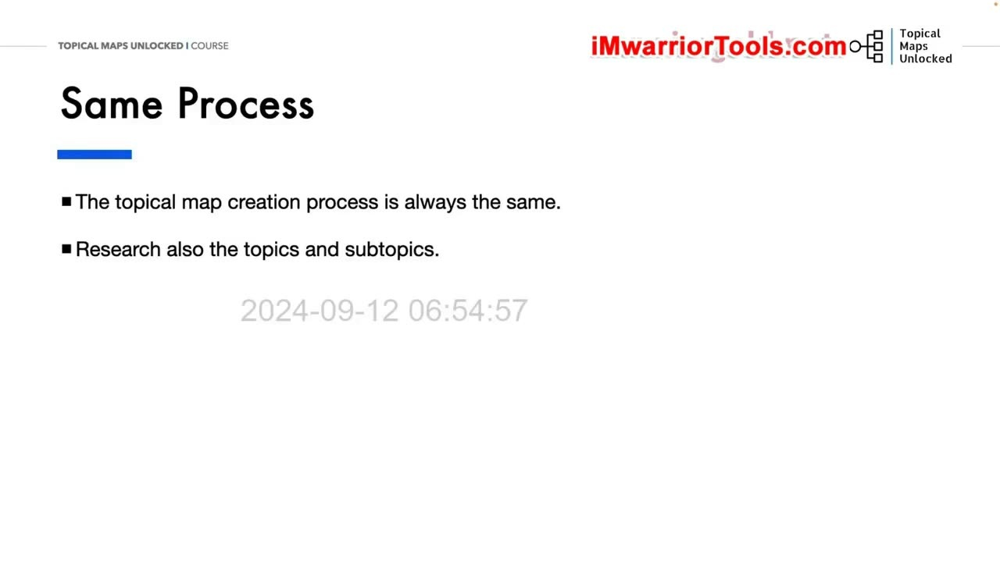
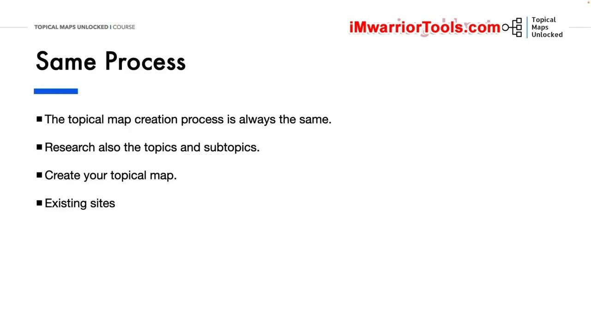
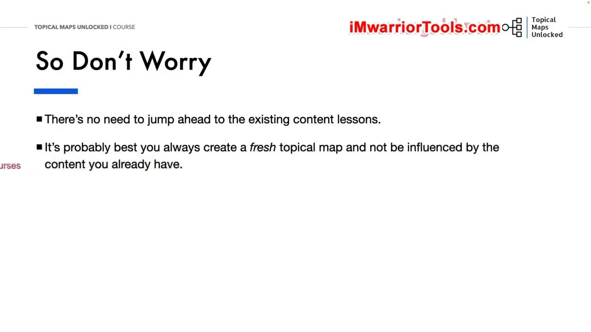

New Site vs Existing Site Approaches
1. Trang web mới và trang web hiện có có cần cách làm khác nhau?
Một trong những câu hỏi thường gặp nhất là: việc tạo Topical map, tức bản đồ chủ đề, cho một trang web mới có khác với việc tạo cho một trang web đã có nội dung hay không? Câu trả lời rất đơn giản: không. Quy trình tạo Topical map vẫn giống nhau trong cả hai trường hợp.
Cách áp dụng cho trang web hiện có sẽ được đi sâu hơn trong một bài học sau. Tuy nhiên, điều đó không làm thay đổi quá trình nghiên cứu và xây dựng Topical map ngay từ đầu.

2. Nghiên cứu đầy đủ các chủ đề và chủ đề phụ
Bạn vẫn luôn cần nghiên cứu đầy đủ những chủ đề chính và các chủ đề phụ mà mình muốn đề cập trên trang web. Việc đã sở hữu một trang web không thay thế cho công việc nghiên cứu này.
Tiếp đó, bạn cần xây dựng Topical map hoàn chỉnh, bao gồm tổ chức các chủ đề thành một hệ thống phân cấp chủ đề. Nghiên cứu các chủ đề và sắp xếp chúng trong bản đồ vẫn là những việc phải thực hiện, bất kể điểm xuất phát là trang web mới hay trang web hiện có.

3. Đặt nội dung hiện có vào Topical map
Sau khi tạo bản đồ, bạn mới xem xét trang web hiện có của mình: bạn đang có những nội dung gì, chúng đang xếp hạng cho những gì, và chúng phù hợp ở đâu trong Topical map. Thứ tự ở đây là tạo bản đồ trước, rồi đối chiếu nội dung đã có với bản đồ đó.

4. Đừng vội bỏ qua các bước nền tảng
Vì vậy, nếu đã có một trang web, bạn không cần lo lắng và cũng không cần nhảy ngay đến các bài học về nội dung hiện có. Đừng vội vàng, bởi như vậy bạn sẽ bỏ lỡ những phần quan trọng: nghiên cứu, lọc, xây dựng hệ thống phân cấp và tạo Topical map. Tạo Topical map luôn là bước đầu tiên.

5. Phân biệt Topic research với Keyword research
Khi tạo Topical map cho trang web hiện có, đừng cho rằng mình đã có một bản đồ hoàn chỉnh chỉ vì trước đây đã làm Keyword research, tức nghiên cứu từ khóa. Cần tự hỏi: công việc đó thực sự là Topic research, tức nghiên cứu chủ đề, hay chỉ là Keyword research, chẳng hạn tìm những từ khóa có mức cạnh tranh thấp?
Vì thế, tốt nhất bạn nên tạo một Topical map mới và không để nội dung mình đã có chi phối bản đồ đó. Đó là lời khuyên khép lại bài học. Hẹn gặp lại ở bài tiếp theo.

Nguồn và liên kết
- Topical Maps Unlocked 2.0 · Course Overview · New Site vs Existing Site Approaches.